国・地域の見分け方
- ドメインは.au
- 車は左側通行
- ユーカリの木が沢山あり電柱もユーカリの木からできることが多い
- GIVE WAYが黒い文字ならばオーストラリア・赤い文字ならばニュージーランド(by plonk it )
- オーストラリアのボラードはニュージーランドのようにぐるりと表裏にかけて塗られているわけではないので区別がつく(by plonk it )。
- 「M1」のような道路番号は南アフリカ共和国にもあるけれどフォントが異なる
見つかる標識
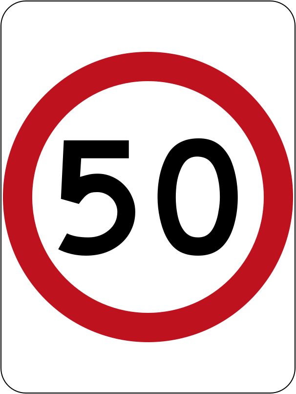
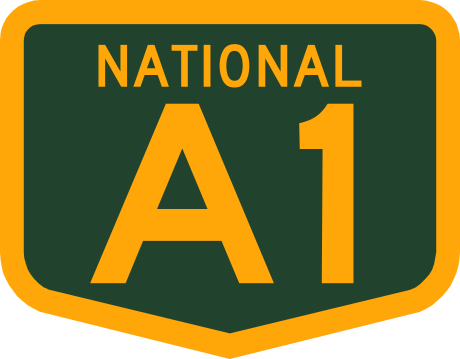
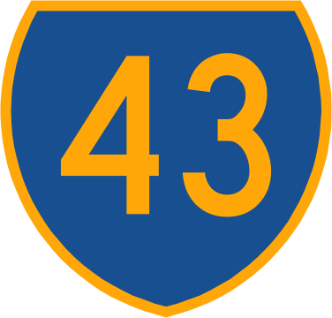
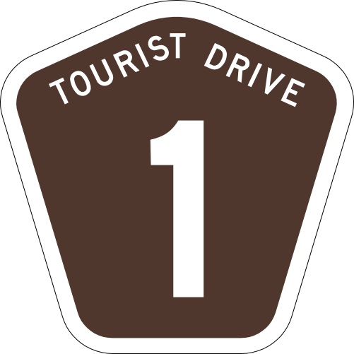
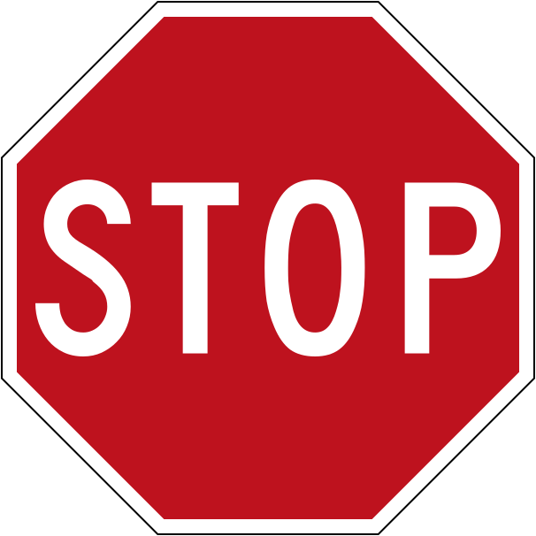
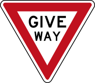
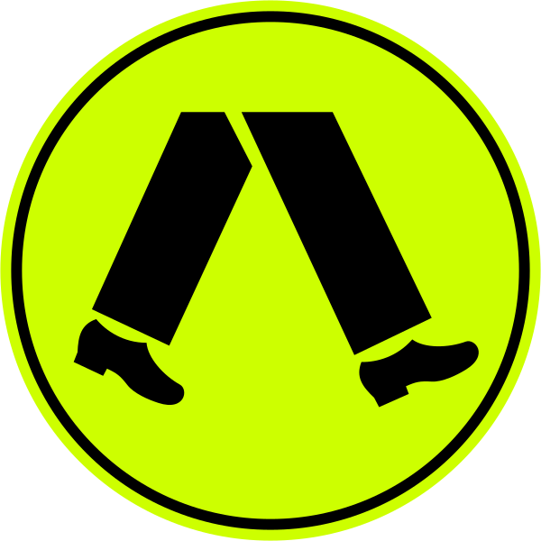
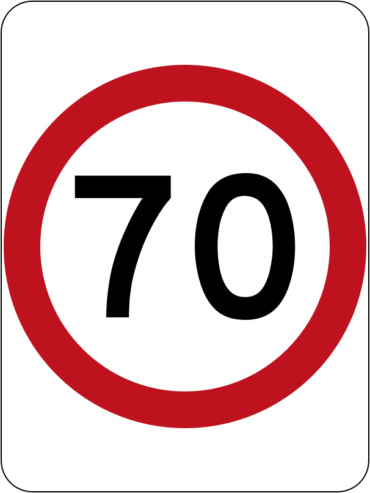
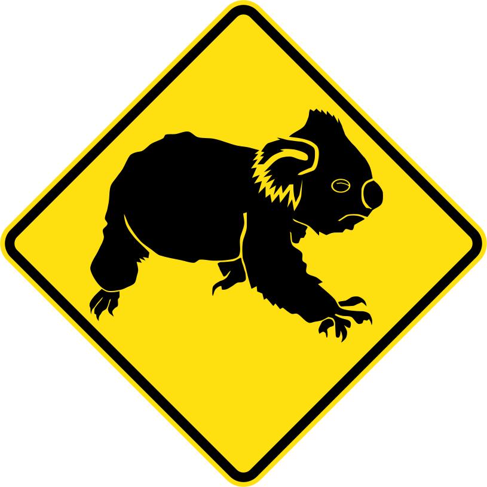
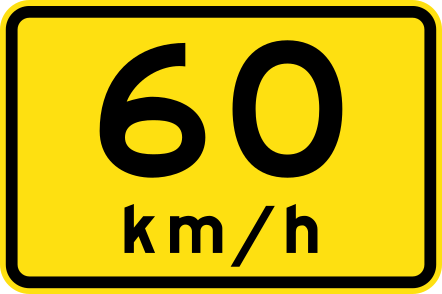
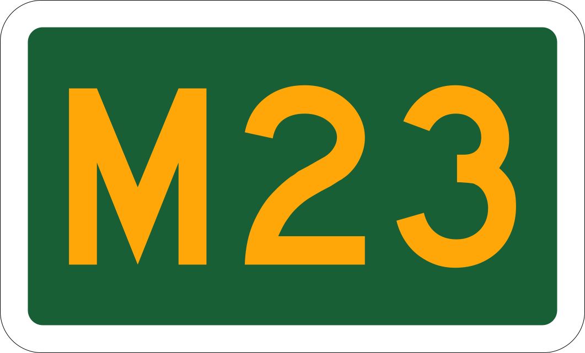
代表的な企業
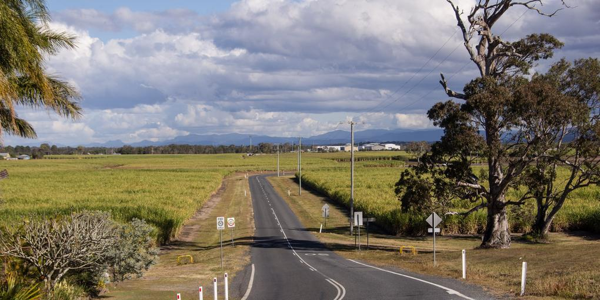
ユーカリの木が沢山ある。電柱は緑色の木製のものやシロアリ対策で鉄でできたものがある(参考文献 Stobie pole)。
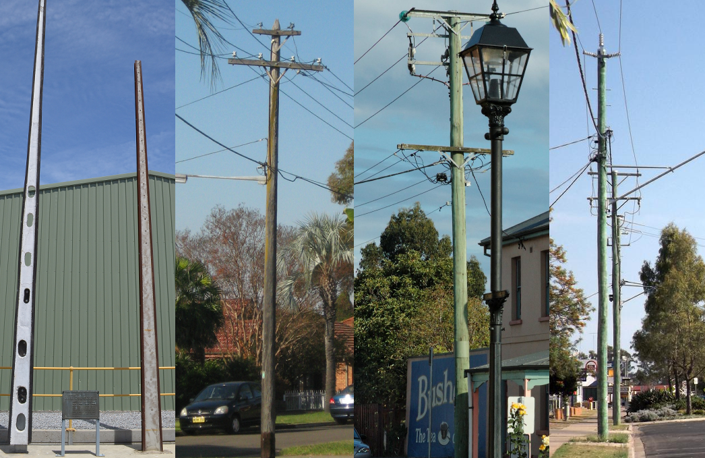
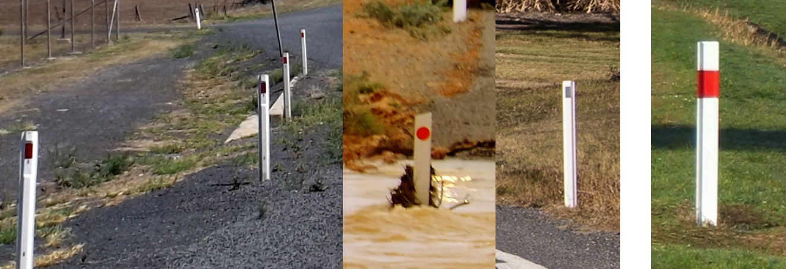
道路番号のフォントがオーストラリアと異なる。左が南アフリカ・右がオーストラリア。南アフリカは「oo」「ee」といった文字が地名に含まれることが多いのと看板が角張っていることが多いので慣れるとすぐ判別できるはず。
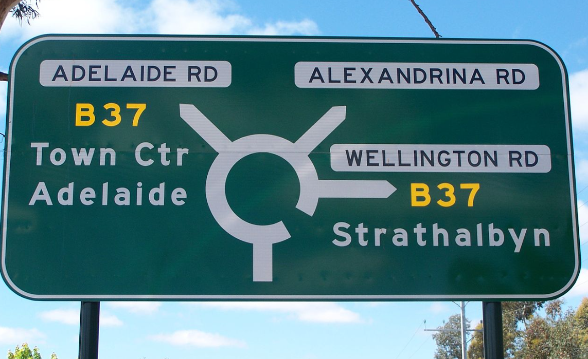
オーストラリアならば速度表記が細長い白いプレートに書かれている。下の図の左がオーストラリア、右がニュージーランド。 また、GIVE WAYが黒い文字で書かれているならばオーストラリア、赤い文字ならばニュージーランド。
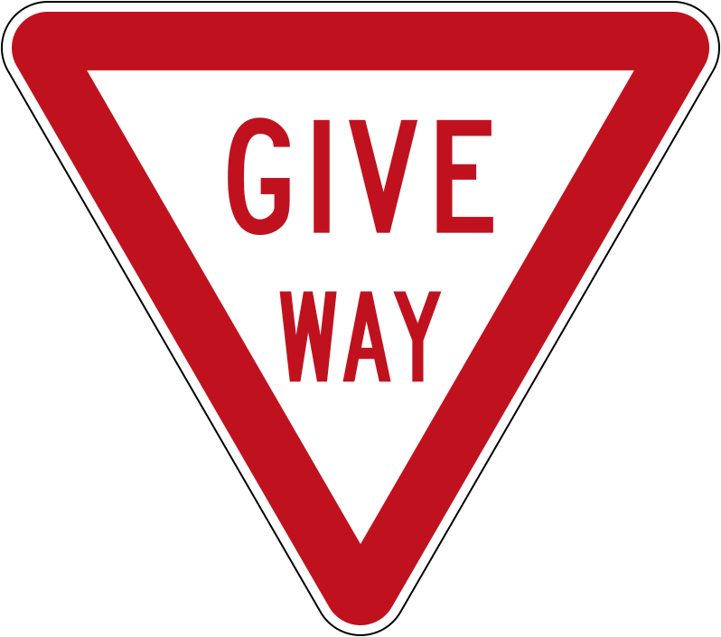
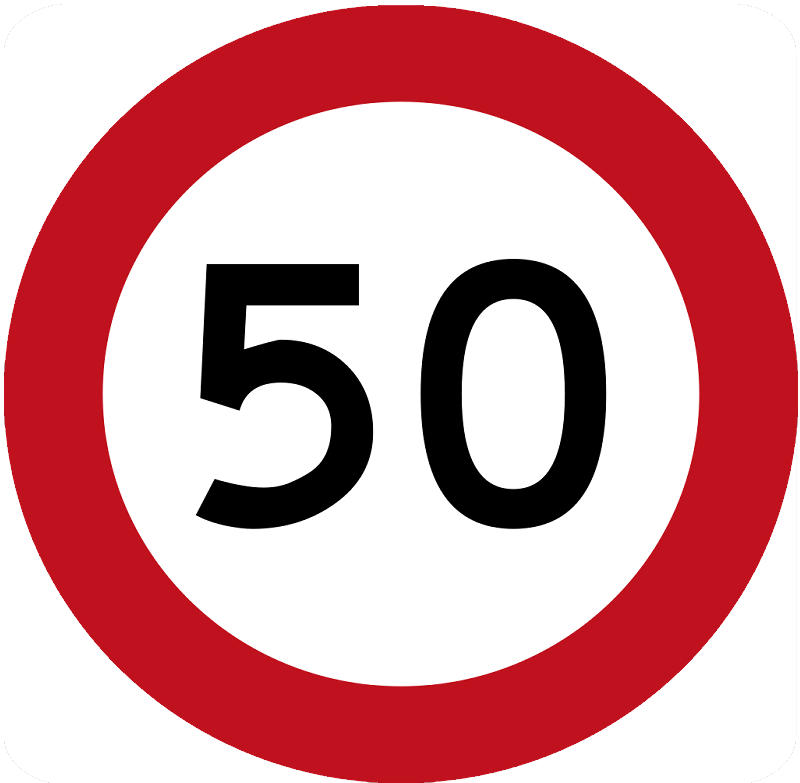
州・地域の絞り込み
- 木の生え具合を把握する
- 濃い緑色：熱帯および亜熱帯の湿った感じの広葉樹林
- 黄色：熱帯および亜熱帯の草原・サバンナ・低木
- 緑：温帯広葉樹など
- 薄緑：温帯の草原・サバンナ
- ブラウン：地中海性の森林、森林地帯
- ベージュ：砂漠と乾燥した低木
- 土の色からおおよその地域が分かるときもある
オーストラリア付近の生態系のおおまかな区分け。（出典：By Terpsichores - Own work, CC BY-SA 3.0, Wikimedia commons, 2023年4月28日に利用）
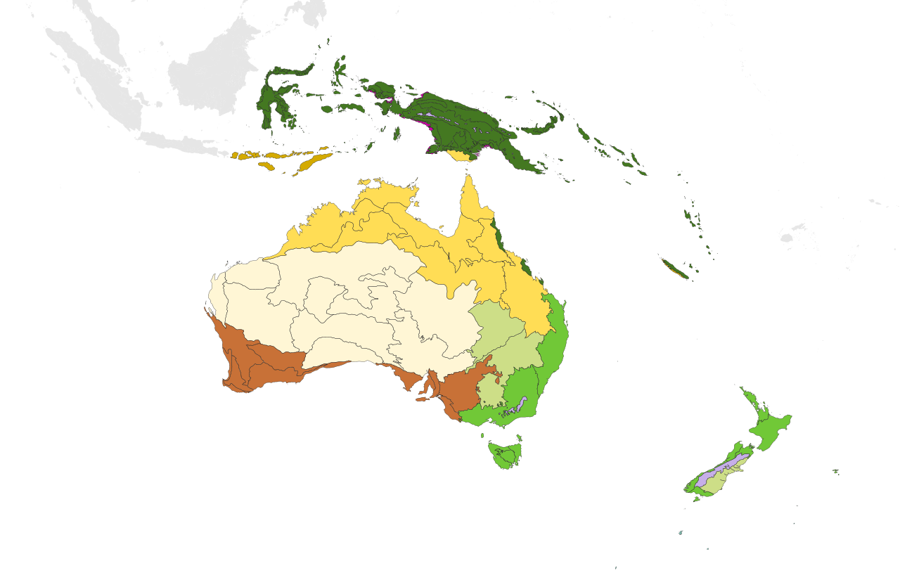
西側は赤色の土が多い、半乾燥環境の土壌(from Wikipedia 『durisol』)。
北西沿岸部の道は特に赤い土が多い。
中央南部の沿岸部のみ？
西の沿岸部と色がかなり近い気がするが草が違う？
電柱
- TAZの電柱には緑色の何かが巻いてある
- QLDの電柱は青いマークがあることがある(by plonk it )
- SAの電柱はいたに挟まれてる感じ(by neckoluv )
- NAの電柱は鉄製で梯子のような格子が特徴的(by plonk it )
- WAとVICの電柱には山の形のものがある
ここで現地から #GeoGuessr の電柱Tips！
— Daigo ʅ(･Θ･)ʃ (@Daig_O) May 4, 2023
黒く塗られた番号・青くて丸いマーカー・ちょっと上に傾いた横向きの碍子はすべてクイーンズランド州特有なので覚えよう！ pic.twitter.com/Jbzg4WThyN
標識・ボラード
- 西オーストラリア州では黄色いポールが標識に使用されている
- 信号機付近の機械や看板に張ってあるシールに「VicRoads」とあればビクトリア州？
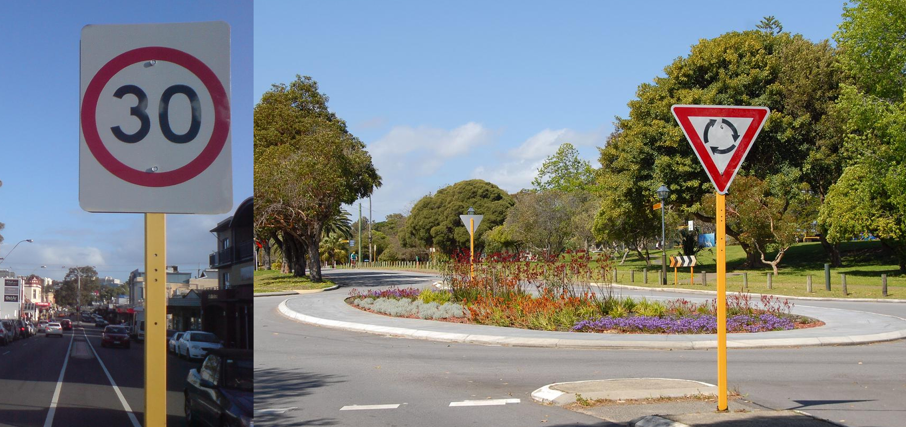
ナンバープレート
- ナンバープレートの色で地域が分かるかもしれないがモザイクが強く分かりづらい(from Wikipedia 『Vehicle registration plates of Australia』)
- クリスマス島が出題されることがあるクリスマス島
- Google Carが特徴的で黄色ナンバーが多い
微妙に赤みがある車が多いときは北東か北のエリア（クイーンズランド）かも？

By NJM2010 - Own work, GFDL, Wikimedia Commons

By EurovisionNim - Own work, CC BY-SA 4.0, Wikimedia Commons
その他
- 市外局番のエリアコードで地域が分かるかも(参考文献 Telephone country and area codes / Australian Government, Canberra)。あまり見かけない上に街中でないと見つけられないため、ブラジルの電話番号と比較するとあまり重要ではない。
- 02：New South Wales・シドニー・キャンベラ
- 03：Victoria・タスマニア・メルボルン
- 04：オーストラリア中の携帯電話、場所指定無し
- 07：Queensland
- 08：中央と西側の領域・パースやダーウィンなど
代表的な企業の説明
| 企業名 | コード | 説明 | 決算 | 配当履歴 |
|---|---|---|---|---|
| BHP Group Plc | NASDAQ | 世界最大の鉱業会社。 | Dividend History | |
| Woodside Energy | NASDAQ | オーストラリアの石油・ガス生産事業者。世界でだいたい1300番目に大きな公開企業。 | Dividend History |